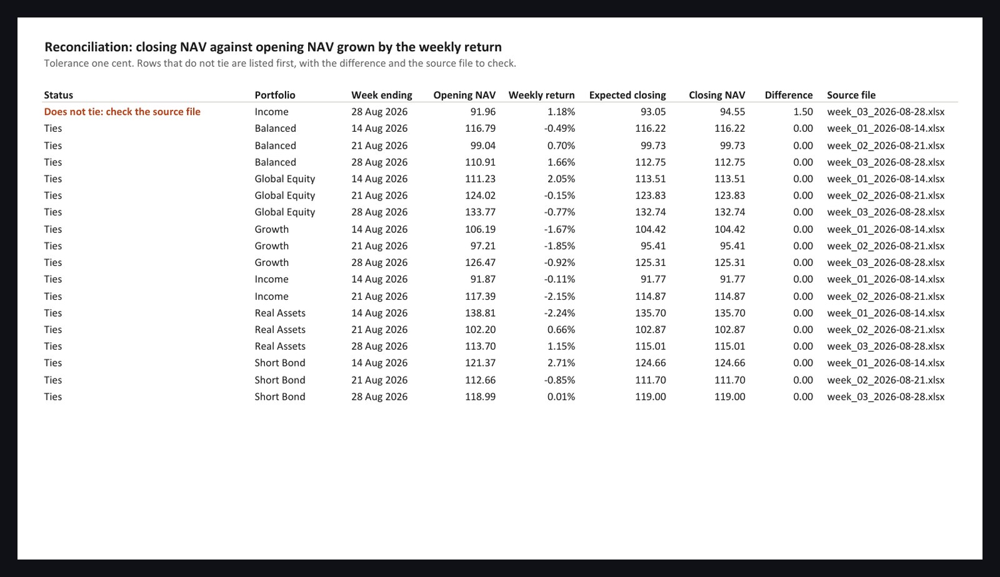

Spreadsheet automation · Excel, Power Query · sample deliverable
Weekly returns loader. Drop the file in the folder, press Refresh, read the exceptions.
A firm receives a returns workbook every week and someone retypes it into a master file. This workbook replaces the retyping. One Power Query reads every weekly file in a folder, in the shape each sender uses, fills one tab per portfolio, and recomputes every closing value from the opening value and the stated return. Rows that do not tie are listed first, with the file to check. The whole weekly routine is Data, Refresh All.
1
cell to edit: the source folder. No formula or query contains a path
3
source files in the sample, in three shapes: title rows, a blank row, one week with percentages exported as text
18
rows loaded and reconciled; the one planted error is caught and listed first
0
numbers retyped, macros to maintain, or rows silently corrected


What it tolerates
- Title rows, blank rows and notes above or below the table in a source file. The query finds the header row by its content.
- Percentages exported as text in one week and as numbers in the next. Both are typed to numbers before anything is computed.
- Files arriving in any order, with any name that starts with the agreed prefix. Every row is stamped with its source file.
What it refuses to do
- Correct a source file. A row that does not tie stays as sent and is flagged. The fix belongs in the source, and the flag says which file.
- Hide a path in a formula. The folder is a named cell on the Summary tab, and moving the folder means editing that one cell.
How it is built
- Eight tabs: About, Summary, one per portfolio, All weeks, Reconciliation. Every table is a Power Query load, so a refresh rebuilds all of them from the files.
- The About tab is the documentation: purpose, the three-step routine, what each tab holds, what the check means, what the workbook does not do.
- Verified from the disproving angle: a script opens the saved file without Excel and checks that all 18 rows loaded, the text percentages became numbers, exactly the planted error is flagged and listed first, and the frozen headers and gridlines are as specified.
- Formatted to a written standard: one typeface, hairline under the header only, numbers right-aligned with fixed decimals, dates left, an input cell tinted, flags in words with colour as support.
Download the sample: the master workbook and the three source files (week 1, week 2, week 3). Put them in one folder, set the folder cell, refresh. The data is synthetic.